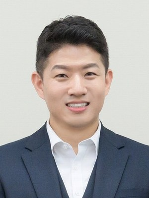

MDL
MDL

정대영Daeyoung Jeong
연구실장 · 연세대학교 경제학부 부교수
개인 홈페이지daeyoung.jeong [at] yonsei.ac.kr
- 現 연세대학교 경제학부 부교수 (2024–현재)
- 現 연세대학교 인구와 인재 연구원 연구위원 (2025–현재)
- 한양대학교 경제금융대학 조교수 (2021–2024, 정치외교학과 겸임)
- POSTECH 인문사회학부 조교수 (2019–2021), 융합대학원 소셜데이터사이언스 겸임교수 (2021)
- New York University Abu Dhabi 박사후연구원 (2018–2019)
- 한국은행 경제연구원 부연구위원 (2016–2018)
- Ph.D. in Economics, The Ohio State University (2016) — 지도교수: James Peck (주지도), Lixin Ye (부지도), Huanxing Yang
- M.A. in Economics, The Ohio State University (2011)
- 경제학 석사, 연세대학교 (2010)
- 공학사(컴퓨터·산업시스템공학) 및 경제학사, 연세대학교 (2008)
연구분야: 게임이론, 메커니즘 디자인, 네트워크 이론